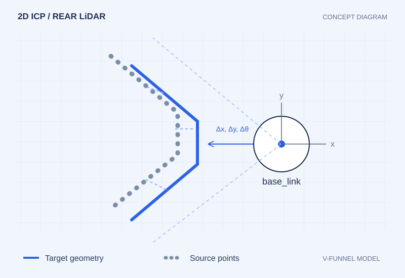
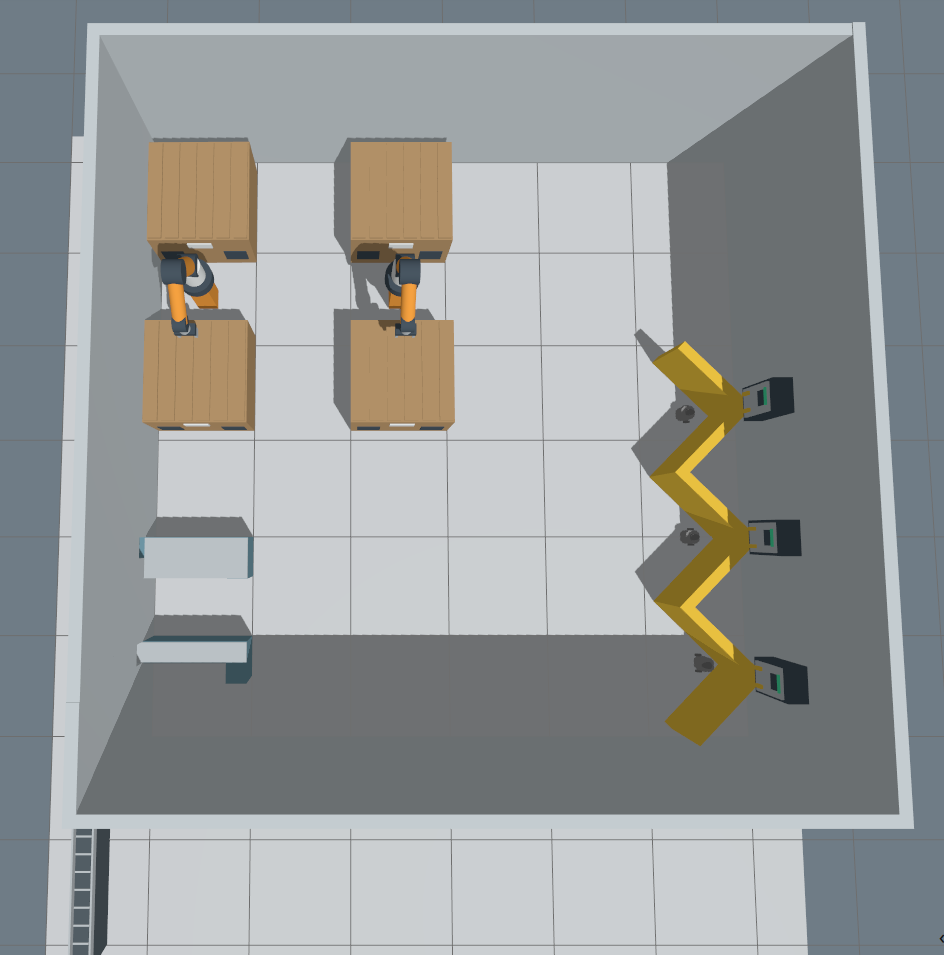

물류센터 출고 지능화AX(logitle)
다수의 자율이동로봇(AMR)과 상위 관제 시스템(FMS), 로컬 시각-언어 모델(VLM)을 통합하여 물류 창고 내 출고 업무를 자동화하고 예외 상황을 지능적으로 인지·제어하는 풀스택 로보틱스 시스템입니다.
오차 1.5cm 이내 정밀 도킹 및 강건한 제어 (FSM)
로봇 후면 LiDAR로 도킹 스테이션의 'V자 홈'을 감지하고 이상적인 모델과 실시간 매칭(2D ICP)하여 초당 20회 정밀 위치 오차를 산출했습니다. 이를 PID 속도 제어와 결합해 밀착 정차하도록 구현하고, 비상 상황 시 감속 및 재탐색을 수행하는 상태 머신(FSM) 예외 처리를 구축했습니다.
로컬 VLM 연동을 통한 고차원 시각 인지 파이프라인
로봇이 스스로 주변 상황을 파악할 수 있도록 엣지 환경에 로컬 VLM(Ollama, Gemma 3 등)을 도입했습니다. 카메라 데이터를 AI가 분석하도록 ROS 2 서비스 브릿지를 개발해, 장애물 종류나 작업자 유무 등을 텍스트로 추론하고 로봇의 다음 행동을 결정하도록 연동했습니다.
Zenoh 통신 기반 다중 로봇 연동 및 관제 백엔드
여러 대의 로봇(AMR)이 상위 서버와 네트워크 병목 없이 실시간 데이터를 교환할 수 있도록 Zenoh 라우터 기반 통신망을 구축했습니다. 이를 바탕으로 FastAPI와 PostgreSQL을 활용해 출고 명령을 분배하고 로봇의 상태 전이를 모니터링하는 중앙 관제(FMS) 시스템을 설계했습니다.

